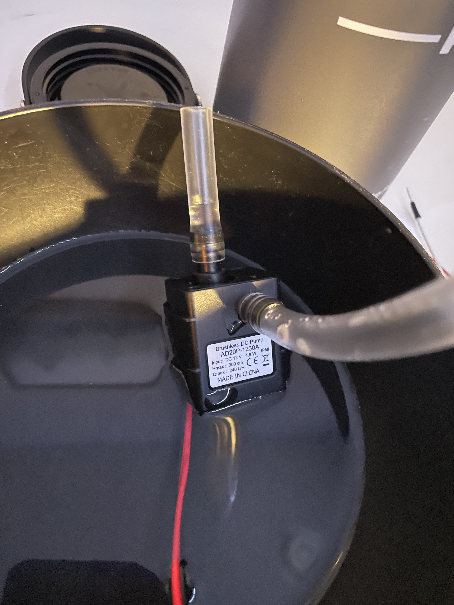
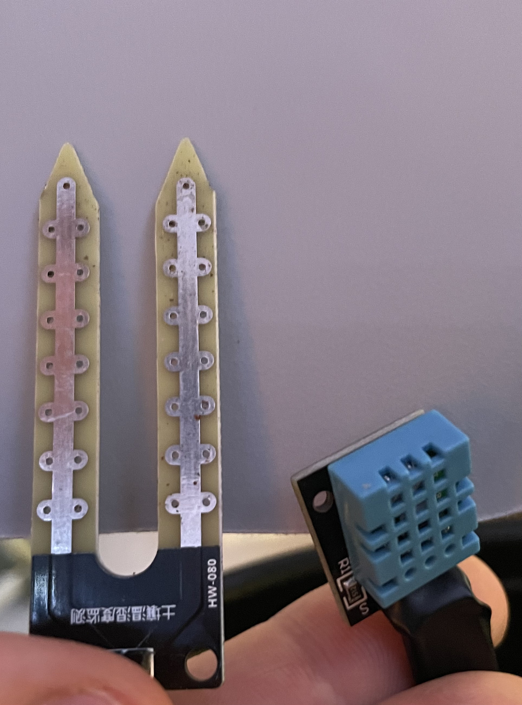
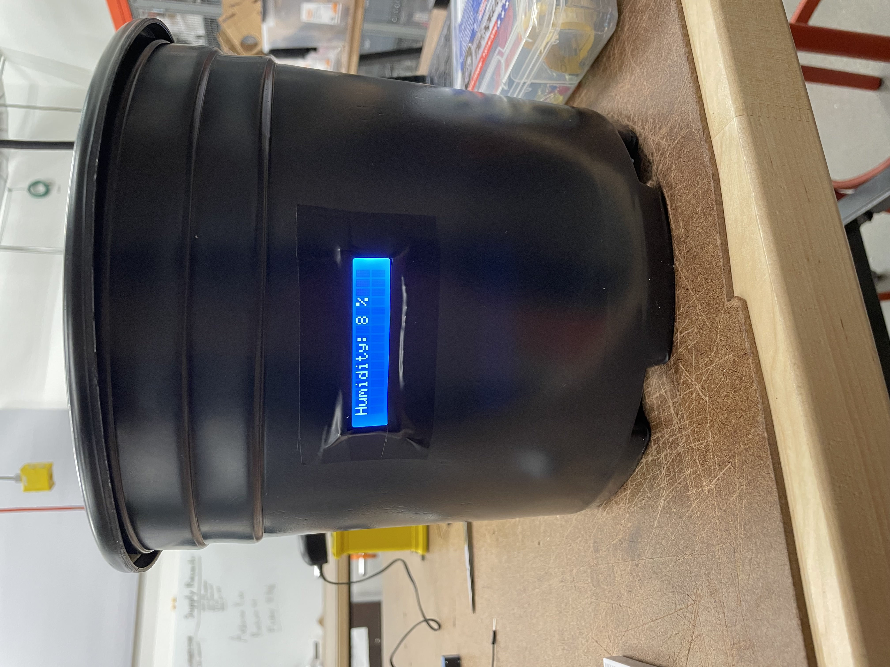

Overview
This is my final project for Introduction to Mechanical Engineering: Programming and Hardware Interface (MEGN200). It was a formative experience that sparked my interest in embedded systems and hardware-software integration.
The project gave me hands-on practice connecting sensors, actuators, and microcontrollers — and valuable experience working in a small team: collaborating, dividing work, and communicating through the design and build process.
Live Demo
The system monitors soil moisture in real time and automatically activates the pump when conditions require it. The LCD display cycles through live sensor readings every 5 seconds.
System Hardware
The system consists of three primary hardware components: a pump, a sensor array, and an LCD display — all coordinated by an Arduino microcontroller.



Sensor Functionality
Three sensor/output components work in concert to automate the watering decision and communicate system state to the user.
Moisture Sensor
Detects changes in soil capacitance caused by varying moisture levels. Outputs volumetric water content — a ratio of water volume to total volume — ranging from 1 (submerged) to 667 (bone dry).
Temp / Humidity
A capacitive humidity sensor and thermistor combo. The capacitive element tracks water vapor in air; the thermistor converts resistance to temperature. Outputs relative humidity (%) and temperature.
LCD Display
A simple LCD module that cycles through temperature, humidity, and soil volumetric water content in 5-second intervals — giving the user a live view of all monitored conditions.